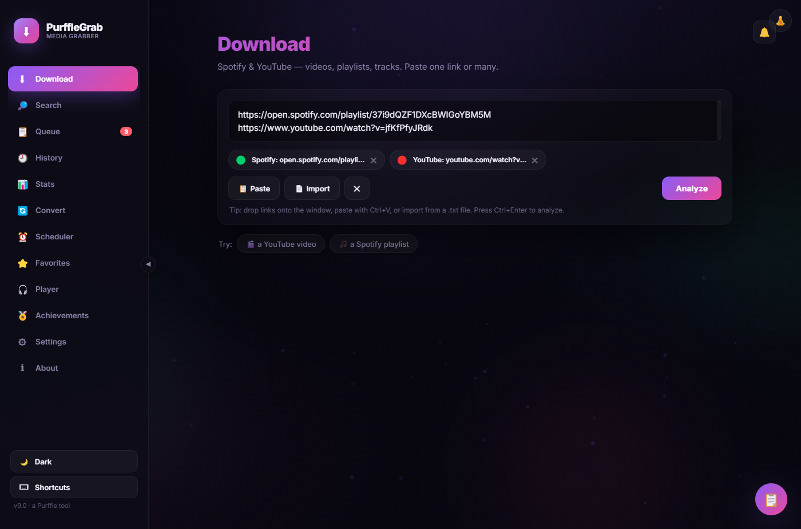
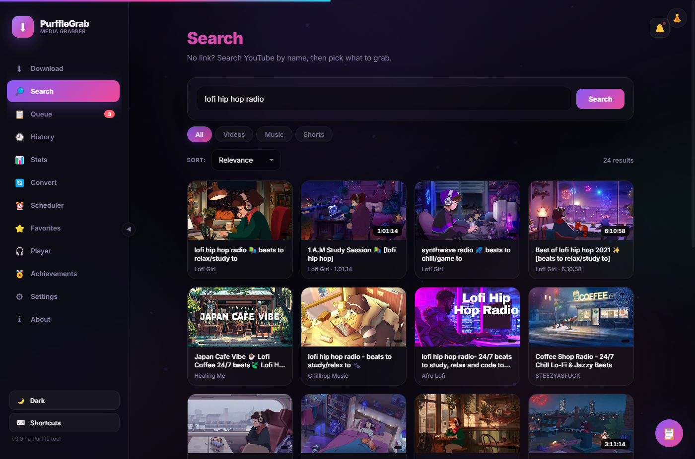
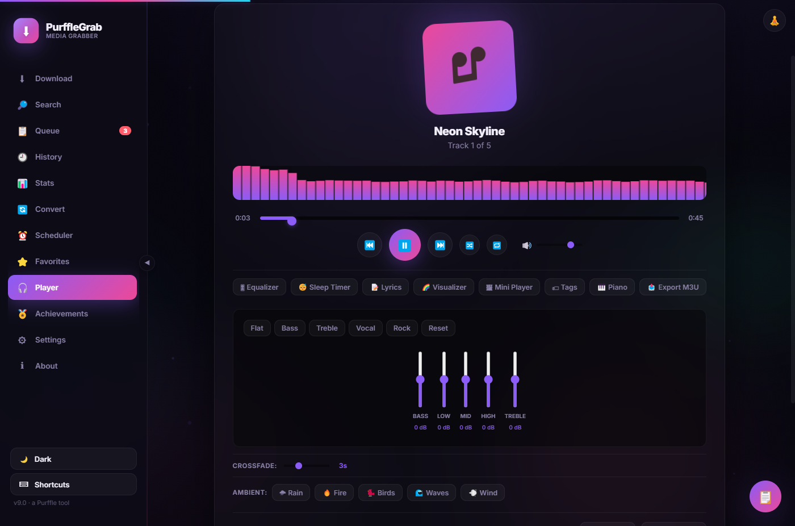
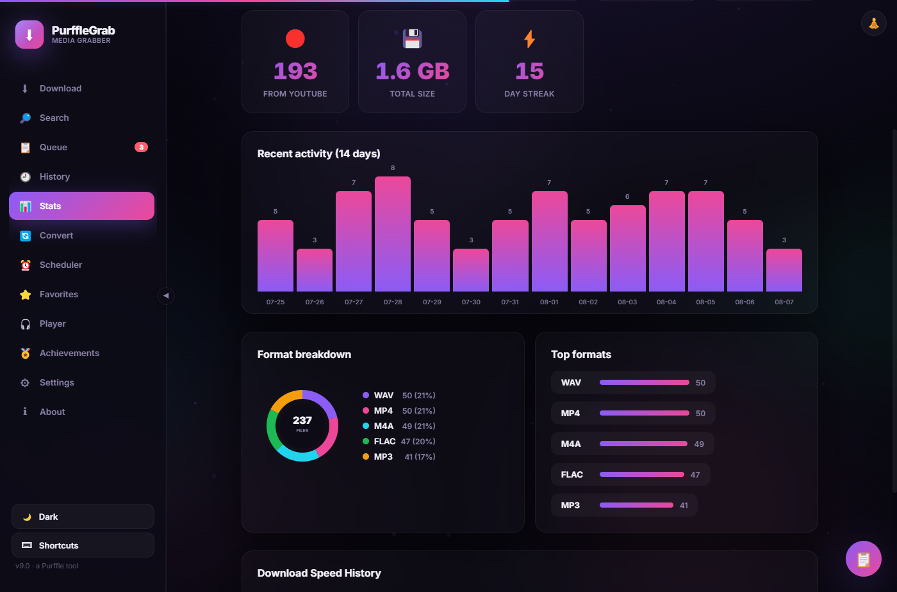
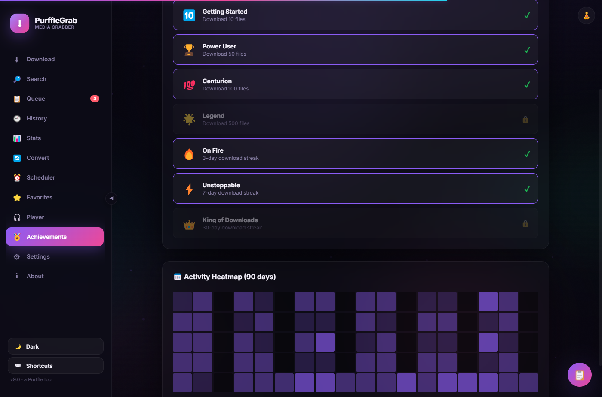
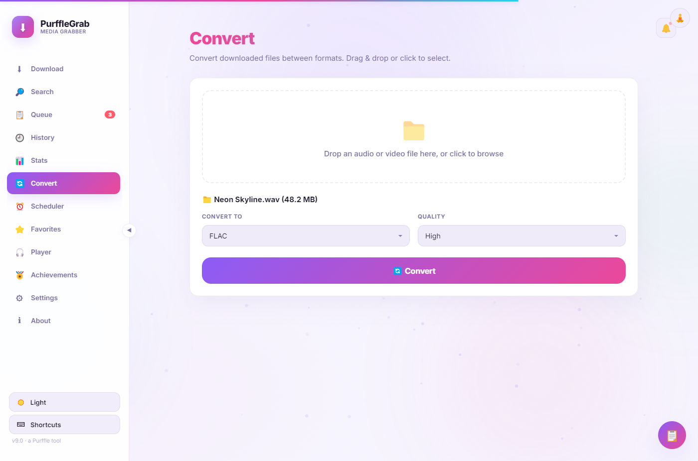
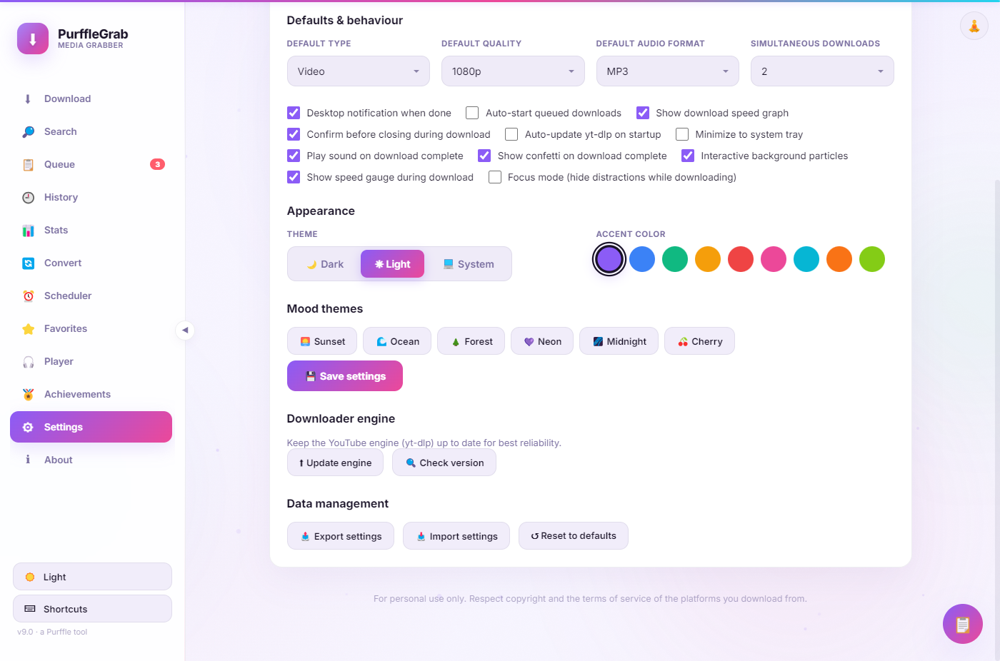

YouTube Video Downloader — Up to 4K
Download any YouTube video in up to 4K 2160p quality. Supports single videos, entire playlists, shorts, channels, and live streams. The best free YouTube downloader for Windows.
PurffleGrab is a free, open-source YouTube video downloader and Spotify playlist download tool for Windows, Mac & Linux. Download videos in 4K, music in MP3 & FLAC. Built-in audio player, equalizer, visualizer. Zero ads, zero limits, zero tracking.
Trusted by 5,000+ users · 44+ features · MIT licensed · Updated August 2026
No browser extensions, no sketchy websites, no accounts. The most feature-rich free YouTube downloader and Spotify playlist download app available.
Download any YouTube video in up to 4K 2160p quality. Supports single videos, entire playlists, shorts, channels, and live streams. The best free YouTube downloader for Windows.
Download complete Spotify playlists, albums, and tracks. Automatically embeds cover art, artist, album, and title metadata. The easiest way to download a Spotify playlist to MP3 or FLAC.
No link? Search YouTube directly from the app. Browse results, preview thumbnails, filter by type, and download — all without opening a browser.
Add multiple URLs at once, import from files, and manage a download queue. Download 100+ YouTube videos or Spotify tracks simultaneously with concurrent downloads.
Schedule YouTube and Spotify downloads for later. Set a date, time, and repeat frequency — PurffleGrab handles the rest automatically. Perfect for off-peak downloading.
Convert between audio and video formats without leaving the app. MP3, FLAC, M4A, WAV, Opus, OGG, MP4, WebM, MKV — all supported.
Clip a specific section of any YouTube video. Set start and end times and download just the part you need — no full download required.
Download and embed YouTube subtitles in any language. Supports manual and auto-generated captions, embedded directly into the video file.
Automatically skip sponsor segments, intros, and outros in downloaded YouTube videos using the community-driven SponsorBlock database.
Track your download history with animated charts and analytics. See totals, format breakdown, day streaks, and 14-day activity timeline.
Stunning glassmorphism design with ambient particle effects, animated gradients, spring animations, and 9 customizable accent colors. The most beautiful downloader UI available.
No telemetry, no analytics, no trackers, no ads. Your data stays on your computer. Fully open-source on GitHub with MIT license.
PurffleGrab is the fastest, most reliable free YouTube video downloader for Windows, macOS, and Linux. Download YouTube videos, playlists, shorts, and music in any format and quality.
Go to YouTube and copy the video or playlist URL. PurffleGrab supports single videos, entire playlists, shorts, channels, and even live streams.
Paste the URL into PurffleGrab and click Analyze. For playlists, you'll see all videos listed — select or deselect individual items as needed.
Select MP4 (up to 4K), MP3 (up to 320kbps), FLAC, or any other format. Click Download and watch real-time progress with speed and ETA.
The best way to download Spotify playlists to MP3 and FLAC. PurffleGrab reads your Spotify playlist, finds the best audio, and saves every track with full metadata.
Paste a Spotify playlist URL and download every track at once. Works with playlists of any size — 10 tracks or 1,000+.
Download Spotify tracks in FLAC lossless quality for audiophile-grade listening. Also supports MP3 320kbps, M4A, WAV, and more.
Every downloaded track includes embedded cover art, artist name, album title, track number, and more — just like the original Spotify track.
Not just playlists — download individual Spotify tracks and full albums with the same quality and metadata embedding.
Download YouTube videos and Spotify playlists in the format that works best for your device and use case.
PurffleGrab isn't just a YouTube downloader — it's a full music player with pro audio tools. Listen to your downloads instantly without switching apps.
Play downloaded MP3, FLAC, M4A, WAV, and OGG files directly in PurffleGrab. Drag-and-drop playlist, crossfade between tracks, favorites list, and gapless playback.
Professional 5-band equalizer with presets for Bass Boost, Treble, Vocal, Rock, and Flat. Fine-tune your audio with real-time Web Audio API processing.
Real-time audio visualizer with Bars, Waveform, and Circular modes. Rendered on Canvas with smooth animations that react to your music.
Built-in playable keyboard piano with triangle wave synthesis. Play notes using your keyboard or click the on-screen keys. A fun creative tool inside your downloader.
Procedural ambient sounds — Rain, Fire, Birds, Ocean Waves, Wind — generated with Web Audio API. Mix and layer sounds for focus, relaxation, or sleep.
Choose from Sunset, Ocean, Forest, Neon, Midnight, and Cherry Blossom mood themes. Each changes the entire app's color palette for a personalized experience.
See why PurffleGrab is rated the best free YouTube downloader and Spotify playlist download tool.
| Feature | PurffleGrab | Browser Extensions | Online Converters | Paid Desktop Apps |
|---|---|---|---|---|
| Price | Free forever | Free / Paid | Free (with ads) | $20-$50+ |
| Ads & popups | None — zero ads | Some | Many ads | None |
| Spotify playlist download | ✓ Full support | ✕ | ✕ | Sometimes |
| YouTube playlist download | ✓ Full support | Limited | ✕ | ✓ |
| 4K YouTube download | ✓ | ✕ | ✕ | ✓ |
| FLAC lossless audio | ✓ | ✕ | ✕ | Sometimes |
| Format converter | Built-in | ✕ | ✕ | Sometimes |
| Download scheduler | ✓ | ✕ | ✕ | ✕ |
| Queue & batch download | ✓ | ✕ | ✕ | Sometimes |
| SponsorBlock | ✓ | ✕ | ✕ | ✕ |
| Video trimming | ✓ | ✕ | ✕ | Sometimes |
| YouTube search | Built-in | ✕ | ✕ | ✕ |
| Built-in audio player | ✓ Full player | ✕ | ✕ | ✕ |
| Equalizer & visualizer | ✓ 5-band EQ | ✕ | ✕ | ✕ |
| Mac & Linux support | ✓ All platforms | Browser only | Browser only | Sometimes |
| Open source | ✓ MIT | Sometimes | ✕ | ✕ |
| Privacy | No tracking | Varies | Tracks you | Varies |
Every screen below is the real app, captured from PurffleGrab v9.0 running on the desktop.








Everything you need to know about using PurffleGrab as your YouTube downloader and Spotify playlist download tool.
PurffleGrab is a personal media tool. It exists so you can keep media you are entitled to keep, on your own devices, offline.
Creators pulling back their own videos, podcasts and music — masters lost, original files gone, or simply archiving what you published.
A large amount of material on YouTube is explicitly licensed for reuse. Lectures, archive footage, government recordings and CC-BY music.
Content you have paid for or been given permission to keep locally — for flights, poor connections, or devices with no streaming app.
Archiving for study, and getting audio into tools that streaming apps don't support — screen readers, hearing aids, DAWs, assistive players.
What it is not for. Downloading copyrighted music or video you have no right to generally breaches the terms of service of Spotify and YouTube, and may infringe copyright where you live. PurffleGrab does not break Spotify's DRM and cannot access protected streams — it reads public playlist metadata and matches tracks to audio already published on YouTube. We do not endorse piracy, and you are responsible for how you use the tool. If you are unsure whether a particular use is permitted, assume it isn't.
Download PurffleGrab free — the best YouTube downloader and Spotify playlist download tool. No signup, no ads, no limits.